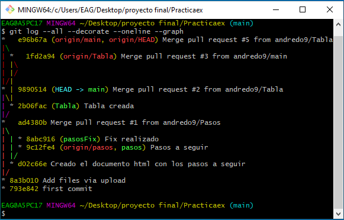

Comando
Explicación
Git add .
Sirve para añadir los cambios realizados
Git push
Sirve para subir a remoto los cambios realizados para que nuestro compañero pueda usarlos
Git pull
Se usa para actualizar los datos que se han subido a remoto en GitHub
